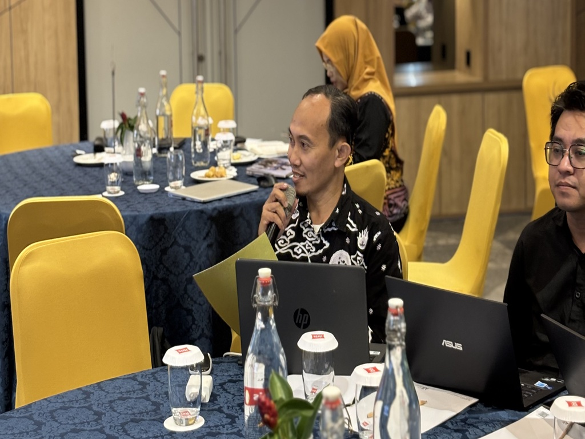
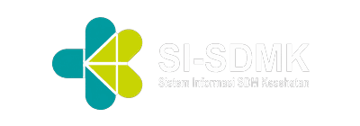

Sumber Daya Manusia Kesehatan
Pelatihan ACLS bagi Dokter Puskesmas
Our Story
Jujur, awalnya saya gugup banget. Waktu lihat boneka manekin terbaring di atas meja itu, saya pikir gampang. Ternyata begitu disuruh praktik RJP beneran, tangan saya gemetar.
- Saya gugup saat pertama menekan dada manekin, tapi bangga karena akhirnya berani melakukannya.
- Saya merasa tegang sekaligus terharu melihat teman-teman saling mendukung dengan kompak.
- Setelah selesai, saya pulang dengan perasaan lega dan lebih siap untuk menolong jika dibutuhkan.
Saya kebagian menekan dada manekinnya. Instruktur bilang, "tekan yang dalam, yang mantap, jangan ragu." Teman saya di sebelah kiri dengan sigap memegangi ambu bag di wajah boneka, sementara teman yang lain mencatat dan mengingatkan hitungan. Kami semua pakai hijab, saling menyemangati dengan lirikan mata, karena tegang.
simantri
Sistem Informasi dan Manajemen Praktik Tenaga Medis dan Tenaga Kesehatan di Fasyankes dan Praktik Mandiri.
Keseruan Tim Kami
Timker SDMK, kami bekerja sebagai tim, tapi rasa kami adalah keluarga — saling peduli, saling jaga, dan tumbuh bersama.
- versi lengkap
- Solidaritas
- Dedikasi
- Siaga


Platform SDM Kesehatan
Berbagai Aplikasi atau Platform yang terintegrasi dengan kegiatan tim kerja Sumber Daya Manusia Kesehatan



Statistik Pengunjung
Data kunjungan website timker SDMK Dinkes Kutai Kartanegara secara real-time
Pengunjung Berdasarkan Negara
Mengambil data pengunjung...